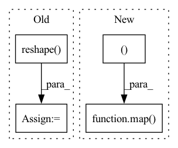

Pattern ID :34666
Before Change
selected_values = expanded_values.gather(-2, expanded_indices)
out = (attn.unsqueeze(-1) * selected_values).sum(dim=-2)
out = out.transpose(1, 2).reshape( b, t, -1)
return self.to_out(out)
After Change
attn = final_topk.softmax(dim=-1)
value_indices, attn = map( lambda x: x.reshape(-1, self.topk * h), (value_indices, attn ))
out = self.values(value_indices, per_sample_weights=attn)
return out.reshape(b, t, e)
In pattern: SUPERPATTERN
Frequency: 3
Non-data size: 4
Instances Fragment ID: 99572703
Project Name: lucidrains/product-key-memory
Commit Name: 915dd922ef8e168f7970d5336d0ba79b4f57fe47
Time: 2020-06-06
Author: lucidrains@gmail.com
File Name: product_key_memory/product_key_memory.py
M Class Name: PKM
N Class Name: PKM
M Method Name: forward(2)
N Method Name: forward(2)
M Parent Class: nn.Module
N Parent Class: nn.Module
M File Name: product_key_memory/product_key_memory.py
N File Name: product_key_memory/product_key_memory.py
M Start Line: 36
M End Line: 71
N Start Line: 35
N End Line: 64
Before Change
q, k, v = (self.to_q(x), self.to_k(x), self.to_v(x))
q = q.reshape( b, self.heads, -1, h * w)
k = k.reshape(b, -1, h * w)
v = v.reshape(b, -1, h * w)
if context is not None:After Change
q, k, v = (self.to_q(x), self.to_k(x), self.to_v(x))
q, k, v = map( lambda t: t.reshape(b, heads, -1, h * w), (q, k, v ))
if context is not None:
context = context.reshape(b, c, 1, -1)
ck, cv = self.to_k(context), self.to_v(context) Fragment ID: 99572700
Project Name: lucidrains/linear-attention-transformer
Commit Name: 75a6cefd9d7facce1ff162dc70138a6e32358f3c
Time: 2020-06-29
Author: lucidrains@gmail.com
File Name: linear_attention_transformer/images.py
M Class Name: ImageLinearAttention
N Class Name: ImageLinearAttention
M Method Name: forward(3)
N Method Name: forward(3)
M Parent Class: nn.Module
N Parent Class: nn.Module
M File Name: linear_attention_transformer/images.py
N File Name: linear_attention_transformer/images.py
M Start Line: 28
M End Line: 35
N Start Line: 24
N End Line: 33
Before Change
k[hh_slice] = rotate_left(k[hh_slice], bsz-1, dim=2)
v[hh_slice] = rotate_left(v[hh_slice], bsz-1, dim=2)
q = q.reshape( b * h, t, d_h)
k = k.reshape(b * h, t, d_h)
v = v.reshape(b * h, t, d_h)
bucket_fn = partial(bucket, buckets)After Change
v[hh_slice] = rotate_left(v[hh_slice], bsz-1, dim=2)
merge_batch_head = lambda x: x.reshape(b * h, t, d_h)
q, k, v = map( merge_batch_head, (q, k, v ))
// bucket qkv
bucket_fn = partial(bucket, buckets) Fragment ID: 99572697
Project Name: lucidrains/sinkhorn-transformer
Commit Name: 02446a9900a155b2512af5839f071ea84d292deb
Time: 2020-04-09
Author: lucidrains@gmail.com
File Name: sinkhorn_transformer/sinkhorn_transformer.py
M Class Name: SinkhornCausalAttention
N Class Name: SinkhornCausalAttention
M Method Name: forward(4)
N Method Name: forward(4)
M Parent Class: nn.Module
N Parent Class: nn.Module
M File Name: sinkhorn_transformer/sinkhorn_transformer.py
N File Name: sinkhorn_transformer/sinkhorn_transformer.py
M Start Line: 287
M End Line: 329
N Start Line: 297
N End Line: 345